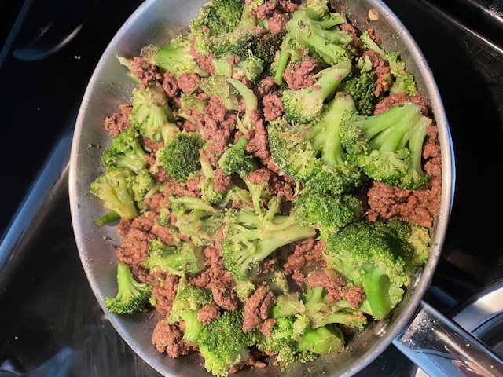

Beef Broccoli Stir Fry

Description
An easy, 1-pan, 30-minute meal that is loaded with fresh broccoli,
tender nutrition-packed beef, and the best stir fry sauce
Ingredients
Beef and Broccoli Ingredients
-
1 lb flank steak, very thinly sliced into bite-sized strips
-
2 tbsp vegetable oil divided
-
1 lb broccoli, (cut into 6 cups of florets)
Stir Fry Sauce Ingredients
-
1 tsp fresh ginger, grated (loosely packed)
-
2 tsp garlic, grated (from 3 cloves)
-
6 tbsp soy sauce
-
3 tbsp packed light brown sugar
-
1 1/2 tbsp corn starch
-
1/4 tsp black pepper
-
2 tbsp sesame oil
Steps
-
Prep: Start cooking white rice first so it's ready when the stir fry is done.
Cover and freeze steak 30 minutes for easier slicing.
-
Combine all stir fry sauce ingredients in a bowl, stir well to dissolve the
sugar, and set aside.
-
Place a large skillet over medium heat and add 1 tbsp oil. Add broccoli florets
and sauté 4-5 minutes, partially covered with lid, stirring or tossing several
times until broccoli is bright green and crisp-tender then remove from pan.
ip: If you prefer softer broccoli, add 2 tbsp water before covering with the lid
and it will steam cook the broccoli.
-
Increase heat to high heat and add 1 tbsp oil. Add beef in a single layer and sauté
2 minutes per side or just until cooked through. Quickly pull out a piece to test
for doneness.
-
Add the sauce, reduce heat to medium/low and simmer 3-4 minutes. It will thicken. Add
broccoli and stir to combine. Stir in 1-2 tbsp water to thin the sauce if desired.
Serve over white rice.